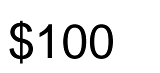

ONE DOCUMENT. MORE THAN ONE READING.
Your PDF can
look right.
And read wrong.
Compare the page with its extracted text. Find the difference, inspect the evidence, and keep the uncertainty.
The finished app opens your file locally. This reference shows actual, prepared native evidence.
SYNTHETIC EXAMPLE
No real transaction. Reader behavior only.

The picture is not the text layer.
Actual crop · PDFium 149.0.7825.0 render
EXTRACTED READING
Loading actual prepared report…
—
A named reader’s output. Not a verdict about the amount.
Raw output from the same PDF bytes
The same glyph maps to different text.
The example’s Unicode mapping turns the displayed “1” into the extracted sequence “1,0”. The unchanged rendered crop and clean twin make the difference inspectable.
- Native reading
- —
- Rendered-crop OCR
- —
- Alignment
- Selected crop; not an automatic browser alignment result
Two readings disagree. This does not establish which is right, document safety or fraud.
Download the actual synthetic PDFKEEP THE EXPLANATION
A difference worth investigating.
Not another screenshot without context.
Keep the raw readings, source crop, exact readers and what was not checked. The original PDF is excluded from this evidence report.
A SMALL GALLERY. DIFFERENT MECHANISMS.
Read the difference.
Only the first card has prepared native evidence here.
The others open their implementation specification.